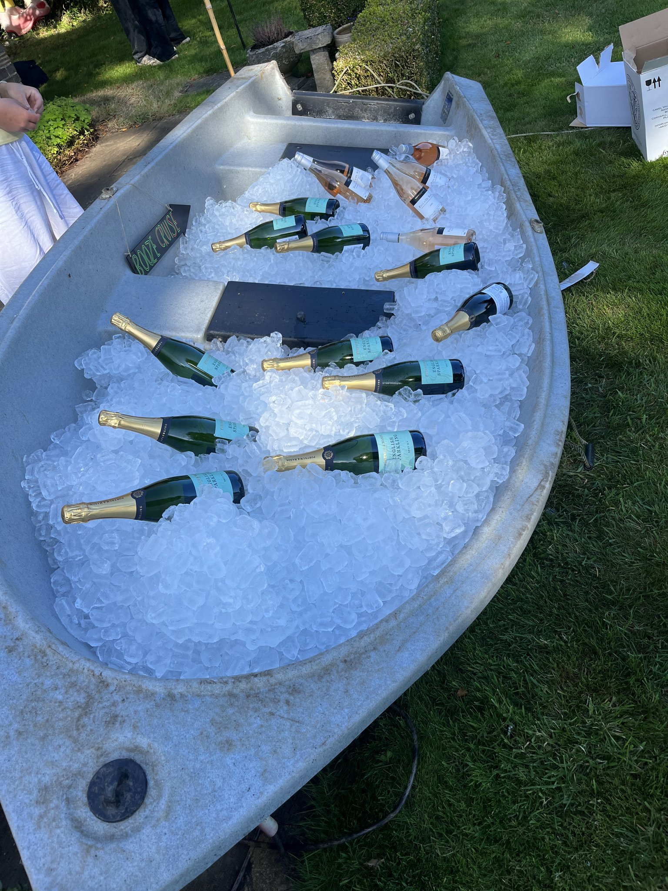

Ordering, bag sizes, weddings, storage, commercial ice, festivals, freezer space — the useful answers are here. If your job is unusual, that is often when a quick chat helps most.

Yes. Private customers are welcome. Tell us your postcode, date and roughly how much ice you think you need. Minimum quantities vary by area, so we will confirm what applies to your delivery.
We are based at Gatwick and regularly deliver across Sussex, Surrey and Kent, as well as the wider South East.
Yes. Larger requirements can take us further afield. Volume, route and timing all matter, so ask us rather than assuming you are too far away.
Sometimes. Same-day ice delivery can be available in selected areas when stock, vehicle capacity and the route allow. Contact us and we will tell you what is realistically possible.
We generally work with a two-hour delivery window. It gives us room to deal with traffic, access delays and the unexpected while still giving you a useful arrival window.
Usually we give a two-hour window rather than an exact minute. If a route is running ahead or something changes, communication is a big part of how we work.
No separate surprise delivery charge is added after the quote. Delivery is included in the bag price we quote you.
Ice is zero-rated for VAT.
Minimum delivery quantities vary by area. Send us the delivery postcode and we will tell you what applies.
We aim to respond to most enquiries within the hour via phone, WhatsApp, text or the website form, although busy periods can sometimes take longer.
Cubed ice is best for drinking and chilling. It is the usual choice for glasses, bars, general cocktails, soft drinks and for keeping Champagne, wine, beer and bottled drinks cold.
Crushed ice is best for food displays and speciality cocktails. It works well for seafood and fish displays, buffet presentation, chilled food displays and drinks that specifically call for crushed ice.
For normal drinks service, choose cubed ice. If you are making a speciality cocktail that specifically needs crushed ice, choose crushed.
Cubed ice. It is our preferred option for filling tubs, baths, troughs, boats, trugs and other containers used to keep bottles cold.
Crushed ice. It sits around products more easily and gives you the chilled display bed normally wanted for seafood, fish and food presentation.
They are about manageability. The smaller bags are easier to lift, carry and use behind a bar, and they are much more packable when freezer space is limited.
Yes. Six individual 2kg bags are much easier to arrange around smaller or awkward freezer spaces than one large 12kg bag.
The 2kg bags can be easier for staff to handle behind a bar, especially where storage and working space are tight. For higher-volume decanting, the 12kg bags are usually quicker.
We recommend the 12kg cubed bags. The ice is free-flowing inside the bag, so you can open it and decant a useful amount straight into a large trug, tub, bath or trough.
As a rough visual guide, a filled 12kg bag is about the size of a filled pillowcase.
For drinking ice only, our usual starting guide is around 10 × 12kg bags per 100 guests. Event length, weather, drinks service and whether you are also chilling bottles can change that figure.
Guest numbers are only part of it. Tell us how many people are coming and whether the ice is for drinks, chilling bottles or both. We can sense-check your estimate with you.
That depends on what you are filling. A small drinks bath is very different from a horse trough, boat or large event container. Tell us the rough dimensions or send a photo and we can talk it through.
Yes. We regularly deliver to rural venues, marquees, teepees and temporary event sites. What3Words is extremely useful because it gives us the exact drop point.
Frozen or suitable chilled storage is the best option. Where there is no storage, keep the ice stacked tightly in the coolest practical place and out of direct sunlight. Ice is still ice, unfortunately we cannot negotiate with science.
Yes, and for local event storage we recommend Grizzly Bear Events in Horsham for chiller and freezer trailer hire.
Contact us as soon as you know. We will do our best to increase the order, subject to stock, vehicle capacity and route availability.
Yes. Mobile bars, caterers, wedding planners, drinks teams and hospitality customers are a major part of what we do.
Yes. We supply hospitality businesses needing cubed or crushed ice, whether that is an occasional top-up, seasonal demand or a repeat delivery requirement.
Yes. We regularly work with mobile bars, caterers and drinks teams at weddings, private parties, festivals and other events, including sites where freezer space or access is limited.
Yes. Tell us the usual quantity, delivery postcode, preferred frequency and how the ice is being used. We can discuss a practical repeat-delivery arrangement around the route and your requirements.
Yes. If you need bags of ice for an ice bath, cold-water experience, retreat or recovery session, tell us the location, date and approximate quantity and we can advise on the delivery.
Yes. We are used to security gates, accreditation, restricted access, loading areas and delivery times that can change.
Yes. For substantial requirements we can deploy multiple temperature-controlled vehicles. Tell us the scale, delivery point and timing and we will plan around the event.
We communicate with the organiser or site contact and work through the practical options. Restricted access and moving delivery windows are exactly why good communication matters.
Yes. We can supply pallet-scale and other substantial commercial quantities depending on the requirement, location and timing.
Yes. We supply commercial ice where businesses need ice as part of food handling or processing, including requirements where ice is used to help keep products cool.
Yes. We have worked with multiple food-industry businesses, supplying pallet quantities of ice to help keep products cool through their processes.
Yes, depending on the application. Tell us what needs to stay cool, the quantity involved, how the ice will be used and how often you need it.
Yes. Regular or standing commercial requirements can be discussed around volume, delivery frequency, route and practical storage or handling needs.
Sometimes, if stock and delivery routing allow. Same-day ice delivery is not guaranteed, so advance booking is recommended whenever you know the date.
Yes, home ice delivery can be possible for parties, weddings and private events where the order meets the minimum quantity for the delivery area.
Yes. Lunar Ice supplies 12kg bags of cubed ice and 12kg bags of crushed ice. Cubed is normally best for drinks and chilling; crushed is particularly useful for food displays and speciality cocktails.
Yes. We supply restaurants, pubs, bars, clubs, coffee shops, hotels, caterers and mobile bars, including repeat hospitality ice delivery where required.
Yes. We handle bulk ice delivery, commercial ice delivery and pallet-scale requirements for suitable orders, including hospitality, events and food-industry customers.
Yes, depending on postcode, order size, date and route availability. Sussex, Surrey and Kent are our core delivery areas, with further-afield work possible for suitable requirements.